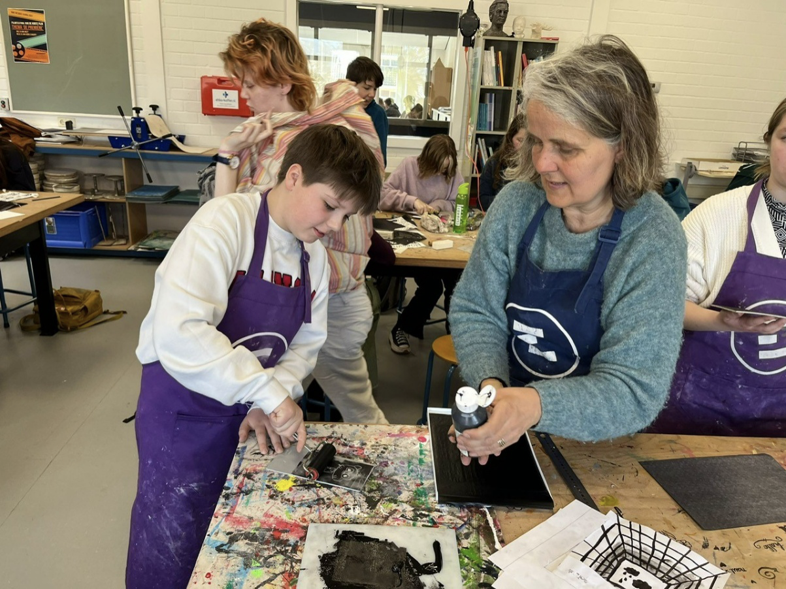
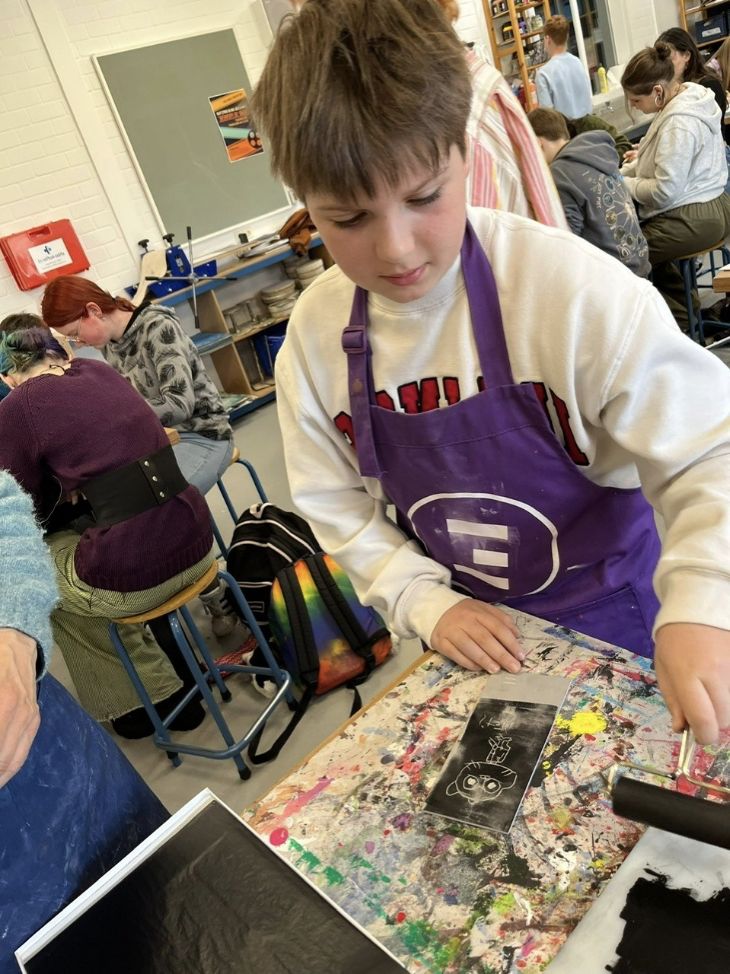
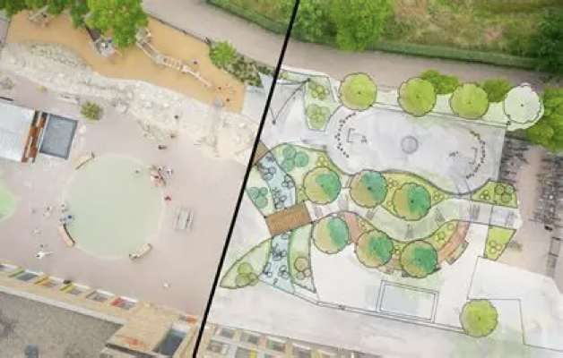
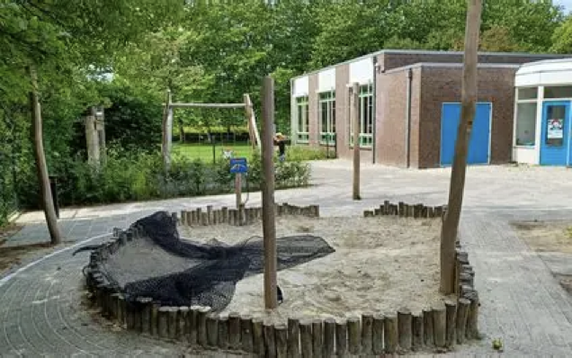

In dit profielwerkstuk laat ik vijf belangrijke momenten uit mijn ontwikkeling zien. Dit zijn momenten die invloed hebben gehad op mijn interesses, mijn vaardigheden en mijn ideeën over mijn toekomst.
Bij elk moment beschrijf ik:
De momenten samen vormen een tijdlijn van mijn ontwikkeling.
Leerjaar 1-2: Meeloopstage Eligant College Zutphen met mijn tante (docent beeldende vorming)

Ik heb met name meegekeken in de klas met de lessen die werden gegeven. Er werden tekenlessen gegeven. Daarnaast werd er met verf gewerkt en heb ik zelf ook mogen etsen. Ook mocht ik helpen met het registreren van afwezigheid.
Ik heb vooral mijn sociale vaardigheden gebruikt. Ik praatte met leerlingen en met docenten.
Ik heb geleerd hoe de dag van een leraar eruit ziet. Ik heb ook meer geleerd over hoe een school achter de schermen werkt. Dat vond ik drukker dan ik vooraf had gedacht. Daarnaast heb ik geleerd dat ik best goed ben in sociale vaardigheden en contact maken. Ik heb ook geleerd dat ik een werkdag nog best lang vind.
Door deze ervaring en andere ervaringen merk ik steeds beter dat ik goed ben in observeren en situaties aanvoelen. Ik heb ook een goede beoordeling gekregen.
Sociale vaardigheden zijn belangrijk. Ook is het belangrijk dat je begrijpt hoe een situatie voor iemand anders is.
Ik heb meer vertrouwen gekregen in mijn sociale vaardigheden. Ik voelde me op school niet altijd goed en had daar niet veel vrienden, maar door deze stage en latere ervaringen heb ik meer vertrouwen gekregen.
Ik vind het leuk dat mijn mensenkennis toeneemt, maar ik wil geen docent worden.

Leerjaar 2-3: Project schoolplein ontwerpen

Tijdens dit project moesten we in een groep een nieuw ontwerp maken voor een schoolplein. We moesten nadenken over hoe een plein eruit zou kunnen zien, wat er op moest komen te staan en hoe leerlingen het plein zouden gebruiken. We maakten schetsen en presenteerden ons ontwerp uiteindelijk.
Ik gebruikte vooral creativiteit en samenwerken. We moesten ideeën bedenken, overleggen met elkaar en keuzes maken over wat wel en niet in het ontwerp zou komen.
Ik heb geleerd dat ontwerpen niet alleen gaat om iets moois maken, maar ook om nadenken over hoe mensen iets gebruiken. Daarnaast leerde ik beter samenwerken en luisteren naar ideeën van anderen.
Ik merk dat ik vaker ideeën krijg over hoe dingen beter of anders kunnen worden ingericht. Ook merk ik dat ik het leuk vind om na te denken over ontwerp en vormgeving.

Samenwerken en creatief denken zijn belangrijke vaardigheden. Je moet rekening houden met andere mensen en met de functie van wat je ontwerpt.
Tijdens het project vond ik het vooral leuk om ideeën te bedenken. Achteraf zie ik dat het ook een goede oefening was in samenwerken en presenteren.
Ik merk dat ik creatief denken leuk vind. Misschien kan dat later terugkomen in een studie of beroep waarbij ontwerpen of ideeën bedenken belangrijk is.
Hier komen later foto's van het schoolpleinproject.
Leerjaar 3: Bezoek / ervaring bij Hoppenbrouwers
Tijdens dit moment maakte ik kennis met het bedrijf Hoppenbrouwers. Ik kreeg uitleg over wat het bedrijf doet en welke soorten werk er worden uitgevoerd. Ik kon zien hoe techniek in de praktijk wordt toegepast en welke verschillende beroepen er binnen het bedrijf zijn.
Ik gebruikte vooral mijn nieuwsgierigheid en mijn vermogen om vragen te stellen. Door goed te kijken en te luisteren probeerde ik te begrijpen hoe het werk daar in elkaar zat.
Ik heb geleerd dat techniek een groot werkveld is met veel verschillende mogelijkheden. Ook zag ik dat er veel samenwerking nodig is tussen verschillende mensen om projecten goed uit te voeren.
Door deze ervaring ben ik meer gaan nadenken over technische beroepen en hoe techniek in het dagelijks leven wordt gebruikt.
Het is belangrijk om verschillende soorten werk te zien voordat je een studiekeuze maakt. Door zulke ervaringen krijg je een beter beeld van wat bij je past en wat je wel of niet interessant vindt.
Tijdens het bezoek vond ik het interessant om te zien hoe het bedrijf werkt. Achteraf heeft het mij geholpen om beter na te denken over mogelijke richtingen voor later.
Deze ervaring helpt mij bij het nadenken over mijn toekomst en mogelijke studierichtingen. Het laat zien hoe belangrijk het is om verschillende beroepen te ontdekken.
Hier komen later foto's van Hoppenbrouwers.
Leerjaar 3-4: Kennismaking met autoschadeherstel
Tijdens dit moment maakte ik kennis met het werk in een autoschadeherstelbedrijf. Ik kon zien hoe beschadigde auto's worden gerepareerd en welke stappen daarvoor nodig zijn. Ik keek mee hoe schade wordt beoordeeld en hoe onderdelen worden hersteld of vervangen.
Ik gebruikte vooral mijn observatievermogen. Door goed te kijken en vragen te stellen probeerde ik te begrijpen hoe het herstelproces werkt en welke technieken worden gebruikt.
Ik heb geleerd dat autoschadeherstel veel precisie en vakmanschap vereist. Het gaat niet alleen om techniek, maar ook om nauwkeurig werken en oog hebben voor details.
Door deze ervaring begrijp ik beter hoeveel werk er achter een autoreparatie zit en hoeveel kennis en vaardigheden daarvoor nodig zijn.
Het is belangrijk om verschillende soorten beroepen te zien. Zo kun je beter ontdekken wat je interessant vindt en waar je talenten liggen.
Tijdens deze ervaring vond ik het interessant om te zien hoe auto's worden gerepareerd. Het gaf mij een beter beeld van het werk in de technische sector.
Door deze ervaring kan ik beter nadenken over wat voor soort werk bij mij zou passen en welke richting ik later eventueel op wil.
Hier komen later foto's van autoschadeherstel.
Leerjaar 4: Stage in Duiven
Tijdens mijn stage in Duiven kreeg ik de kans om mee te kijken binnen een bedrijf en te ervaren hoe een normale werkdag eruitziet. Ik hielp waar dat mogelijk was en keek mee met verschillende werkzaamheden. Daardoor kreeg ik een beter beeld van hoe het werk in de praktijk verloopt.
Tijdens mijn stage gebruikte ik vooral mijn sociale vaardigheden, door met collega’s te praten en vragen te stellen. Ook gebruikte ik mijn observatievermogen om te begrijpen hoe het werk werd uitgevoerd.
Ik heb geleerd hoe een werkdag in een bedrijf eruitziet en hoeveel verschillende taken er kunnen zijn. Ook merkte ik hoe belangrijk samenwerking en communicatie op de werkvloer zijn.
Door deze stage begrijp ik beter hoe werk in een bedrijf georganiseerd is en welke verantwoordelijkheden mensen hebben.
Een stage is belangrijk omdat je een realistisch beeld krijgt van het werk. Het helpt om beter na te denken over een studie of beroep voor de toekomst.
Tijdens de stage vond ik het interessant om te zien hoe het werk daadwerkelijk gebeurt. Achteraf heeft het mij geholpen om beter na te denken over wat voor werk bij mij past.
Deze ervaring helpt mij om na te denken over mijn studiekeuze en toekomstige richting. Door verschillende stages en ervaringen kan ik beter ontdekken wat bij mij past.
Hier komen later foto's van de stage in Duiven.